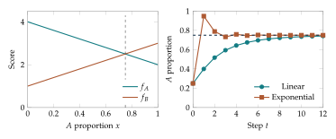

An interaction changes the opportunities available to a type. A strategy may do well when it is rare and poorly when it becomes common. To describe this feedback, we assign scores to encounters and average them using the present composition. The resulting multipliers depend on the state, so the growth rule becomes a nonlinear difference equation.
A matrix is a table of encounter scores
Consider two strategies, \(A\) and \(B\), with score table \[M=\begin{pmatrix}a&b\\c&d\end{pmatrix}.\] The row specifies the focal strategy and the column specifies its opponent. Thus \(b\) is the score of an \(A\) individual meeting a \(B\) individual. We assume opponents are encountered with frequencies \(x\) and \(1-x\). The average scores are \[f_A(x)=ax+b(1-x),\qquad f_B(x)=cx+d(1-x).\] The assumption about encounters is part of the model. Assortment by type, spatial clustering, or a rule excluding encounters with oneself can produce different averages.
The score difference is a straight-line expression: \[\Delta(x)=f_A(x)-f_B(x)=(b-d)+(a-b-c+d)x.\] Its sign records which strategy has the higher score at each composition. A zero of \(\Delta\) is a candidate interior fixed point for the update rules below.
Example. A coexistence score table
For \(M=\left(\begin{smallmatrix}2&4\\3&1\end{smallmatrix}\right)\), the scores are \(f_A=4-2x\) and \(f_B=1+2x\). Their difference is \(3-4x\), which vanishes at \(q=3/4\). Below \(q\), strategy \(A\) has the higher score; above \(q\), strategy \(B\) has the higher score. At \(q\), both scores are \(5/2\).
Turning scores into positive multipliers
Scores and multipliers play different roles. A score may be negative, while a population multiplier must be positive. One possible conversion is the linear multiplier rule \[w_i=1+\eta f_i,\] where \(\eta>0\) controls the strength of the update. This rule requires \(1+\eta f_i>0\) for every score that can occur. If all encounter scores are at least \(m<0\), choosing \(\eta<-1/m\) is sufficient. Equality would permit zero multipliers and falls outside the positive rule used here.
Another conversion is the exponential multiplier rule \[w_i=e^{\eta f_i}.\] The number \(e\) is approximately \(2.71828\). The exponential is positive for every real input, and it satisfies \(e^{u+v}=e^ue^v\). For computation, a calculator’s exponential function is enough. Its algebraic properties are what we need in this course.
Normalizing linear multipliers gives \[x^+=\frac{x(1+\eta f_A)}{1+\eta\bar f},\qquad \bar f=xf_A+(1-x)f_B,\] and consequently \[x^+-x=\frac{\eta x(1-x)\Delta(x)}{1+\eta\bar f}.\] Normalizing exponential multipliers gives \[x^+=\frac{xe^{\eta f_A}}{xe^{\eta f_A}+(1-x)e^{\eta f_B}}.\] For either conversion, the change has the sign of \(\Delta\) in the interior. The amount of change depends on the conversion and on \(\eta\).
Example. One score table, two finite rules
Use the coexistence table, \(x=1/4\), and \(\eta=1\). Then \((f_A,f_B)=(7/2,3/2)\). Linear multipliers are \((9/2,5/2)\), giving \(x^+=3/8\). Exponential multipliers give \(x^+=e^2/(e^2+3)\approx0.7112\). Both steps increase the \(A\) proportion. Their sizes differ substantially.
Sign diagrams and fixed points
For positive multipliers, the pure states \(0\) and \(1\) are fixed. An interior state is fixed precisely when the two scores agree. When \(a-b-c+d\ne0\), the candidate is \[q=\frac{d-b}{a-b-c+d}.\] It is an interior fixed point only if \(0<q<1\). If the score difference is zero everywhere, every state is fixed. If the difference is a nonzero constant, there is no interior fixed point.
A sign diagram divides the interval at the zeros of \(\Delta\) and records the direction of each single step. It provides useful information about motion. To prove convergence, we also need to control whether steps cross the proposed limit.
Proposition. Monotone coexistence for the linear rule
For the coexistence table and any \(\eta>0\), the linear rule sends every interior initial state toward \(q=3/4\) without crossing it, and the resulting sequence converges to \(q\).
To prove this, first compute \(\bar f=1+5x-4x^2\). Since \(\Delta=-4(x-q)\), \[x^+-q=(x-q)\left(1-\frac{4\eta x(1-x)}{1+\eta\bar f}\right).\] The factor in parentheses is strictly between zero and one for \(0<x<1\). Positivity follows because subtracting \(4\eta x(1-x)\) from the denominator leaves \(1+\eta(1+x)>0\). The upper bound follows because the subtracted fraction is positive. Thus the error keeps its sign and decreases in magnitude.
A sequence starting below \(q\) is increasing and bounded above by \(q\); a sequence starting above \(q\) is decreasing and bounded below by \(q\). Such a sequence has a limit. Substituting its limit into this rational update is valid because the denominator stays positive. The limit must be a fixed point, and the interval between the initial state and \(q\) contains no other fixed point. Therefore the limit is \(q\).
Example. A coordination threshold
For \(M=\left(\begin{smallmatrix}4&1\\2&3\end{smallmatrix}\right)\), we have \(\Delta=4x-2\). If \(x<1/2\), every step lowers \(x\); if \(x>1/2\), every step raises it. Both rules therefore move away from the threshold. The bounded sequences converge to \(0\) and \(1\), respectively. Starting exactly at \(1/2\) leaves the state fixed.
What changes when a score table changes?
Exponential normalization is unchanged if a common number \(C\) is added to all current scores: each weight gains the same factor \(e^{\eta C}\), which cancels. Multiplying all scores by \(c>0\) is equivalent to replacing \(\eta\) by \(c\eta\).
For linear multipliers, adding \(C\) changes the effective intensity. When \(1+\eta C>0\), \[1+\eta(f_i+C)=(1+\eta C)\left(1+\frac{\eta}{1+\eta C}f_i\right).\] The first factor cancels upon normalization, leaving intensity \(\eta/(1+\eta C)\). Consequently, fixed points and signs may agree even though finite trajectories differ. This identity is useful when interpreting a table whose scores have been shifted to make them positive.
Step size is part of the model
The exponential coexistence rule can cross its equilibrium. At \(x=1/4\) and \(\eta=2\), its next value is \(e^4/(e^4+3)\approx0.9479\), beyond \(3/4\). A sign diagram alone does not exclude this crossing. Repeated large steps can alternate across an equilibrium. Numerical experiments should report both the update rule and the chosen intensity, because they jointly determine the recurrence.

A general no-crossing test
The coexistence proof illustrates a reusable finite method. Suppose an update can be written \(x^+=x+G(x)\) and \(q\) is a proposed interior fixed point. If algebra produces \[x^+-q=(x-q)R(x),\qquad 0<R(x)<1,\] then the new error has the old sign and smaller magnitude. A trajectory cannot cross \(q\). The resulting monotone bounded sequence converges, and checking fixed points identifies the limit. The decisive work is the factorization and the bound on \(R\).
If instead \(-1<R(x)<0\), the error reverses sign while shrinking in magnitude. This describes an alternating approach whenever the estimate holds throughout a region preserved by the update. If \(R\) depends on the state, evaluating it at one point proves only a one-step statement there. A uniform bound over the relevant region is needed for a conclusion about the whole run.
Example. A recurrence that alternates exactly
The affine rule \(x^+=3/4-x/2\) maps \([0,1]\) into \([1/4,3/4]\). Its fixed point is \(q=1/2\), and \(x^+-q=-(x-q)/2\). Starting at \(x_0=0.2\) gives \(0.65\), \(0.425\), and \(0.5375\). The error is exactly \((-1/2)^t(x_0-q)\). This simple recurrence separates the ideas of crossing an equilibrium and failing to converge: crossing can accompany steady error reduction.
Boundary behavior from encounter scores
When A is rare, \(x\) is close to zero, so its score is close to \(b\) and B’s score is close to \(d\). The comparison \(b-d\) determines whether a small positive A proportion rises in the next step. When B is rare, \(x\) is close to one, so the relevant comparison is \(a-c\). These are the endpoint values of the score difference. They are obtained from the encounter interpretation before any trajectory is calculated.
If \(b>d\) and \(a<c\), each type has an advantage when rare. The score difference changes from positive to negative, producing an interior equality. If \(b<d\) and \(a>c\), each type is disadvantaged when rare, and the interior equality is a threshold. The other sign combinations can give one type a consistent advantage. These observations organize the algebra of a two-strategy table.
Example. Checking an advantage at low frequency
For the coexistence table, a rare A meets mostly B and scores close to \(4\), while common B scores close to \(1\). A therefore increases when introduced at a small positive proportion. Near the A vertex, rare B scores close to \(3\) while common A scores close to \(2\), so B increases. Both endpoint comparisons agree with the interior equality at \(3/4\). Starting exactly at an endpoint still leaves it fixed because the multiplier rule does not introduce absent types.
From a score table to a reproducible experiment
A numerical report should specify the encounter convention, the table, the score-to-multiplier conversion, the intensity, the initial state, and the number of steps. Each item affects the calculation. A plot labeled only with a table omits part of the recurrence.
For a two-type experiment, record the score difference and the updated proportion at several states. Check that the observed direction agrees with the sign identity. Then ask a separate question about crossing: is the new state still on the same side of an interior fixed point? Finally, compare any proposed long-run description with an exact error estimate when one is available. This sequence of calculations links model assumptions, algebra, and numerical observations without requiring a formula for every trajectory.
Exercises
- Explain the meaning of each entry of \(\left(\begin{smallmatrix}5&-1\\2&3\end{smallmatrix}\right)\) under the row-focal convention.
- Find the two average scores and their difference for the table in Exercise 1.
- For that table, find a sufficient range of positive \(\eta\) for linear multipliers to remain positive for every composition.
- Calculate one linear update for the coexistence table at \(x=1/2\), \(\eta=1\).
- Calculate one exponential update for the same state and intensity.
- Find and classify the fixed points for \(M=\left(\begin{smallmatrix}3&3\\1&1\end{smallmatrix}\right)\) using the sign of the score difference.
- Give a score table for which every composition is fixed. Explain the condition on its rows.
- Verify each step in the proof of monotone coexistence, including the expression for \(\bar f\).
- For exponential coexistence, start at \(x=1/4\) and compute four updates with \(\eta=2\). Record which side of \(3/4\) each value occupies.
- Add \(5\) to every entry of the coexistence table. Compare the linear updates at \(x=1/4\), \(\eta=1\) before and after the change.
- Prove the stated invariance of the exponential rule under adding a common score. Does the common score need to be independent of the current state?
- Design two tables with the same interior fixed point but opposite signs of \(\Delta\) on either side of it. Explain the different population behavior.
Selected exercise solutions
2. The scores are \(f_A=6x-1\) and \(f_B=3-x\), so \(\Delta=7x-4\). The interior equality occurs at \(4/7\).
3. Every score is at least \(-1\). Thus \(0<\eta<1\) is sufficient and ensures positivity even at \(x=0\).
4. The scores are \((3,2)\) and the multipliers \((4,3)\). Therefore \(x^+=4/7\).
5. Cancelling the common factor \(e^2\) gives \(x^+=e/(e+1)\approx0.7311\).
10. The original answer is \(3/8\). After the shift the multipliers are \((19/2,15/2)\), giving \(x^+=19/64\). Equivalently, the shifted rule has original-table intensity \(1/6\).
11. Every numerator and the denominator acquire the factor \(e^{\eta C}\). Cancellation works at each state, so the same conclusion holds for a common state-dependent score \(C(x)\).